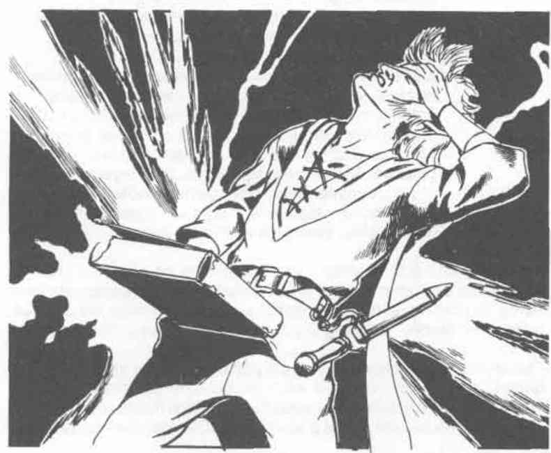

法术说明：特别注释 · Spell Explanations
以下译自，补充魔法师八环法术的裁定。
永久术 · Permanency
对施法者本人使用永久术时，可使下列法术的效果永久存在：
| 通晓语言 Comprehend Languages | 防护普通飞弹 Protection from Normal Missiles |
| 侦测邪恶 Detect Evil | 阅读魔法 Read Magic |
| 侦测幻术 Detect Illusion | 奔跑 Run |
| 侦测隐形 Detect Invisibility | 巧言术 Tongues |
| 侦测魔法 Detect Magic | 紫外视觉 Ultravision |
| 红外视觉 Infravision | 隐形仆役 Unseen Servant |
| 防护邪恶 Protection from Evil |
除个人使用外，永久术也可令下列作用于物件、生物或区域的法术持续存在：
| 警报术 Alarm | 魔法嘴 Magic Mouth |
| 深口袋 Deeppockets | 保存术 Preserve |
| 解除魔法 Dispel Magic | 虹光法球 Prismatic Sphere |
| 变巨术 Enlarge | 臭云术 Stinking Cloud |
| 恐惧术 Fear | 火墙术 Wall of Fire |
| 力牢 Forcecage | 力墙术 Wall of Force |
| 风阵术 Gust of Wind | 蛛网术 Web |
| 隐形术 Invisibility | 风墙术 Wind Wall |
如果将永久术施于无生命物件，施法者损失一点体质的几率只有 5%。但如果将此法术作为魔法装置中的一次充能，例如储法戒指的一次充能，则损失一点体质的几率为 100%。

瑟藤的法术免疫 · Serten’s Spell Immunity
此法术针对下列魔法给予相应的豁免加值：
| 豁免加值 | 适用魔法 |
|---|---|
| +9 | 迷惑 Beguiling、魅惑 Charm、暗示 Suggestion、遗忘 Forget、催眠 Hypnotism、弱能射线 Ray of Enfeeblement、影响人的小法术 |
| +7 | 命令 Command、支配 Domination、恐惧 Fear、定身 Hold、惊骇 Scare、惊吓 Spook、厌恶／同感 Antipathy/Sympathy、困惑 Confusion、集体暗示 Mass Suggestion、邪眼 Eyebite、恐惧披风 Cloak of Fear |
| +5 | 誓言 Geas、使命 Quest、混乱 Chaos、弱智 Feeblemind、奥图的不可抗拒之舞 Otto’s Irresistible Dance、痛楚 Dolor、强求 Demand、折磨 Torment、雷欧蒙的烦扰术 Leomund’s Lamentable Belabourment |
即使某项魔法通常不允许豁免，本法术也赋予对上述魔法进行豁免的机会。容貌造成的着迷等非上述魔法效果不在此列。